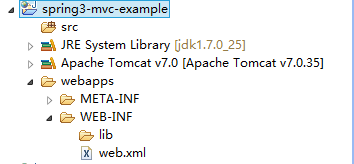
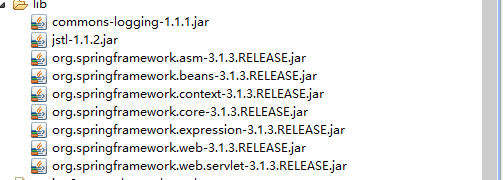

目标：输入一个url地址，显示页面，页面内容从后台获取。

目标：输入一个url地址，显示页面，页面内容从后台获取。
准备：目录结构，依赖架包
首先创建基本的动态web工程的目录，如同下面的结构：

在下载的spring-framword版本的dist目录下，有发布的各种用途的jar包，需要什么架包就使用什么架包。在这个入门级的程序中，我们没有使用到数据库，所以不需要org.springframework.jdbc.RELEASE.jar架包，由于依赖于common-log，所以需要commons-logging.jar。本示例所需架包如下图：

web.xml配置：DispatcherServlet
Spring MVC围绕着DispatcherServlet这个核心进行设计的，包括处理请求、URL映射、视图解析、本地化和主题解析等。
如下配置了一个名称为spring3-example的Servlet，其中url-pattern有多种设计方式，请参见 Web 记：如何设计URL ：
<servlet>
<servlet-name>spring3-example</servlet-name>
<servlet-class>org.springframework.web.servlet.DispatcherServlet</servlet-class>
<load-on-startup>1</load-on-startup>
</servlet>
<servlet-mapping>
<servlet-name>spring3-example</servlet-name>
<url-pattern>/</url-pattern>
</servlet-mapping>
创建Spring bean配置文件
一旦初始化了DispatcherServlet，Spring MVC就会在web应用程序的WEB-INF目录下寻找spring bean的配置文件[servlet-name]-servlet.xml，这里的名称是spring3-example-servlet.xml，那么接下来就是在WEB-INF下创建该文件。
<?xml version="1.0" encoding="UTF-8"?>
<beans xmlns="http://www.springframework.org/schema/beans"
xmlns:xsi="http://www.w3.org/2001/XMLSchema-instance" xmlns:p="http://www.springframework.org/schema/p"
xmlns:context="http://www.springframework.org/schema/context"
xsi:schemaLocation="
http://www.springframework.org/schema/beans
http://www.springframework.org/schema/beans/spring-beans-3.0.xsd
http://www.springframework.org/schema/context
http://www.springframework.org/schema/context/spring-context-3.0.xsd">
<context:component-scan base-package="org.sayi" />
<bean
class="org.springframework.web.servlet.mvc.method.annotation.RequestMappingHandlerMapping" />
<bean
class="org.springframework.web.servlet.mvc.method.annotation.RequestMappingHandlerAdapter" />
<bean id="viewResolver"
class="org.springframework.web.servlet.view.InternalResourceViewResolver">
<property name="viewClass"
value="org.springframework.web.servlet.view.JstlView" />
<property name="prefix" value="/WEB-INF/example/" />
<property name="suffix" value=".jsp" />
</bean>
</beans>
上面代码中是基于注解的自动扫描配置，这样就会自动扫描@Controller、@Reposity、@Service组件等
<context:component-scan base-package="org.sayi" />
配置文件中还提供了三个特别的bean，这些bean在spring中有特别的作用。比如viewResolver配置视图文件存放在WEB-INF/example目录下，RequestMappingHandlerMapping映射请求给处理器，会自动查询@Controller中的@RequestMapping注解，在3.1以前的版本中使用DefaultAnnotationHandlerMapping。默认的配置在包org.springframework.web.servlet下的DispatcherServlet.properties文件中。
创建控制器org.sayi.controller.HelloController
使用注解@Controller标识控制器，@RequestMapping标识映射关系，如果方法返回值为void，则默认返回以方法名命名的视图，如下，则会返回show.jsp页面。
package org.sayi.controller;
import org.springframework.stereotype.Controller;
import org.springframework.ui.Model;
import org.springframework.web.bind.annotation.RequestMapping;
@Controller
public class HelloController {
@RequestMapping("show")
public void show(Model model){
model.addAttribute("msg", "hello,spring3 mvc example by Sayi");
}
}
创建页面 WEB-INF/example/show.jsp
<%@ page language="java" contentType="text/html; charset=UTF-8"
pageEncoding="UTF-8"%>
<!DOCTYPE html>
<html>
<head>
<meta charset="UTF-8">
<title>spring2 mvc example</title>
</head>
<body>
${msg}
</body>
</html>
测试结果
至此，完整的目录结构如下：
访问：http://localhost:port/spring3-mvc-example/show